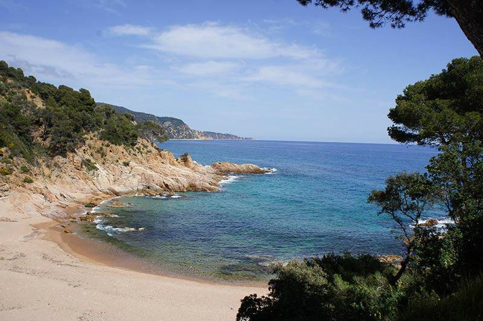

About me#
I’m a physicist/engineer converted into a computational statistician. I love statistical data analysis, programming and data visualization. I am a core contributor of ArviZ a project for exploratory analysis of Bayesian models. In addition to probabilistic modeling, I also enjoy teaching and technical writing.
I think that the culture in scientific research needs deep changes towards a more collaborative, open and diverse model. I am interested in open science, reproducible research and science communication. I want to pursue a career in probabilistic modeling and statistical research with special emphasis on openness and reproducibility.
In my spare time, I like playing board games and going to the beach to do water activities. I have been sailing and snorkeling regularly since I was little and more recently I added kayaking to the mix too! I generally spend the summer at the Costa Brava. Here I leave you a sneak peak of the views when nobody is around

Academic work and publications#
I have also worked as doctoral researcher and research assistant, at Helsinki University and at Universitat Pompeu Fabra respectively. Here are some publications I have helped a bit with:
Mikkola, Petrus, et al. «Prior knowledge elicitation: The past, present, and future.» arXiv preprint arXiv:2112.01380 (2021).
Rossell, David, Oriol Abril, and Anirban Bhattacharya. «Approximate Laplace approximations for scalable model selection.» Journal of the Royal Statistical Society: Series B (Statistical Methodology) 83.4 (2021): 853-879.
Badenas-Agusti, Mariona, et al. «HD 191939: Three Sub-Neptunes Transiting a Sun-like Star Only 54 pc Away.» The Astronomical Journal 160.3 (2020): 113.
Foreman-Mackey, Daniel, et al. «emcee v3: A Python ensemble sampling toolkit for affine-invariant MCMC.» arXiv preprint arXiv:1911.07688 (2019).
Get the emcee package code!
Support me#
You can support me directly via
Ko-Fi
Flexible donations, one time or recurrent
Account required
Debit or credit card, PayPal or Stripe available
LiberaPay
Recurrent donations only
Account required
Debit or credit card, PayPal or EURO bank transfer available
Buy Me a Coffee
One time donations only (at least for now)
No account required
Debit or credit card
When you support me directly you are both helping me dedicate time to the open source projects I contribute to and sustaining this blog and other personal projects.
If you or your company prefers supporting the open source projects directly, you can also do so through NumFOCUS:
When donating to ArviZ or PyMC, you are supporting me indirectly, along with the rest of the people who make these libraries possible.
If you use open source and have the means to do so, please consider donating somehow. We need some financial support to make sure open source is sustainable.